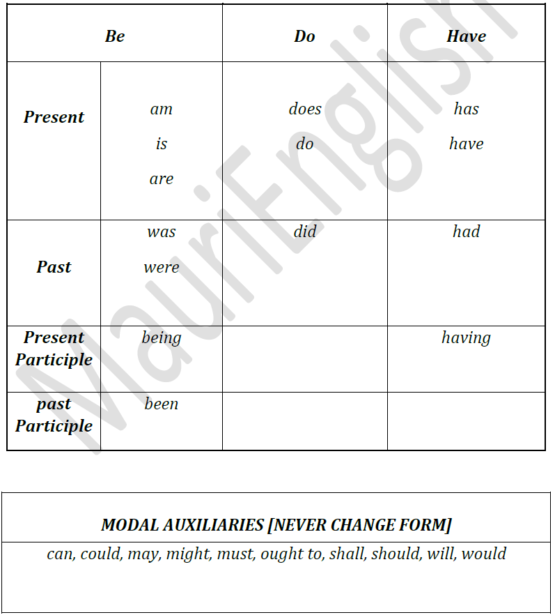

English Auxiliary
Every sentence must have a verb.
To depict doable activities, writers use verbaction verbs.
To describe conditions, writers choose linking verbs be, do, and have are both stand-alone verbs and auxiliary verbs.
When these verbs are auxiliary, you will find them teamed with other verbs to complete the verb phrase.
